Five minute introduction
Contents
Five minute introduction#
Hello! Let’s go through the basics of Open Source Brain (OSB), this will take only 5 minutes to read! (yes, it’s that easy).
Note: this information is specific to OSBv1!
This is the help section of your home screen, feel free to come back here every time you are lost, most of the anwsers you’ll ever need are here! From your home screen you can work with any project and model available in OSB or even create your own ones. To search for available projects you can click on the Explore OSB link in the top bar or use the search box.
What is an OSB project?#
But first things first, what is an OSB project?
An OSB project is a container of computational neuronal models, usually these models are directly linked to a publication, or they might all be grouped in a project by a specific technology. An OSB project is always linked to a GitHub repository which stores all the models available in the given project, so if you are already familiary with GitHub you’re good to go, otherwise here you’ll find all you need to know. OK, so inside an OSB project there can be many models, but how do I work with a specific one? Within OSB there is an online environment that will help you both explore, simulate, and work with models. Yes that’s right, you won’t have to leave your browser to explore or even to simulate a specific model! Every project has a main model as entry point, it could be the main network, or cell, etc. for the given project, to explore this model just click on the green button “Explore model” at the top right corner when inside a project. To explore every other model available click on the “More” button next to it.
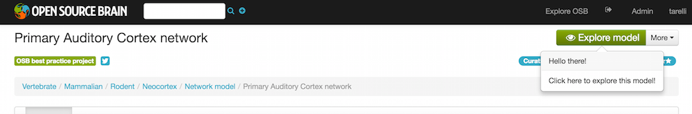
The model will load inside OSB, this might take between few seconds or up to a minute depending on the size of the model, you know how complex the brain can be right? You are looking at the model now and you are in read mode which means you can poke around and look at the content of the model but you can’t run simulations…yet (keep reading!). So what can you do?
Pan and Zoom#
One of the most straightforward features is simple three-dimensional pan, zoom, and rotation functionality. This works both with the mouse as well as more precise control with the navigation buttons on the left hand panel.
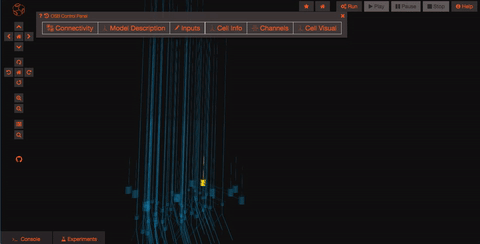
Explore the models#
Models in OpenSourceBrain have descriptions associated with them. You can access these descriptions by clicking on the “Model Description” button on the OSB toolbar.
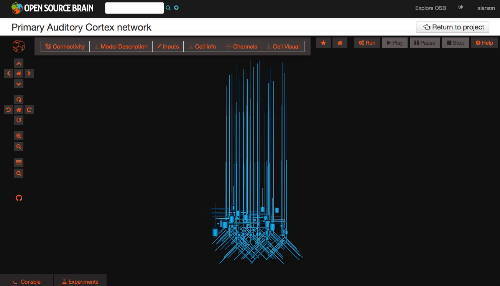
Clicking on individual cells in the view will let you explore further descriptions of those cells, including any inputs or Ion channels. Clicking further into the model channels will enable you to see activation variable plots for those channels.

While you click through the cell descriptions, you can always go back to an earlier sheet using the history icon in the upper left hand corner of the information window.
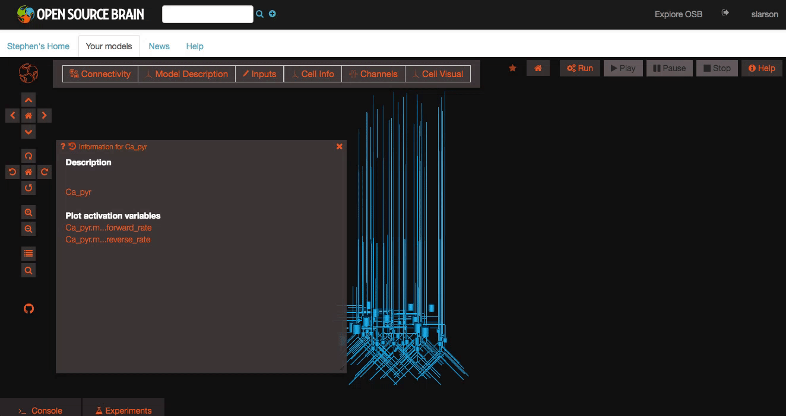
Explore the network connections#
OSB has a variety of widgets built in to help you explore your models. Models like this one have a significant number of connections. By clicking on the “Connectivity” button, you can explore the connection patterns of your model using a variety of graphical tools.
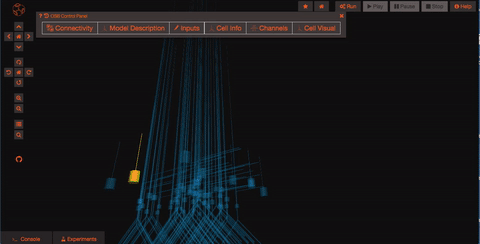
What if you want to run a simulation? First of all you need to persist your model, this operation will create a snapshot of the model (a copy of whatever the latest is on GitHub) which is all yours and on which you’ll have write access! Persisting the model is very simple, just click on the star icon on the top of the screen and wait few seconds (in order to do this, you’ll need to be logged in as a registered user of Open Source Brain).
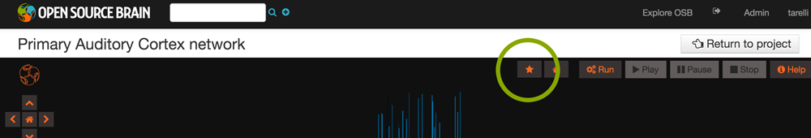
The model is now persisted so you can work with it, let’s have a look at the experiments! Experiments represent a particular configuration of your model, for each experiment you’ll be able to decide which state variables you want to record, which values you want to give to the parameters of the model and even what simulator you’d like to use (do you know we are also connected to the San Diego Super Computer Center?), handy no?
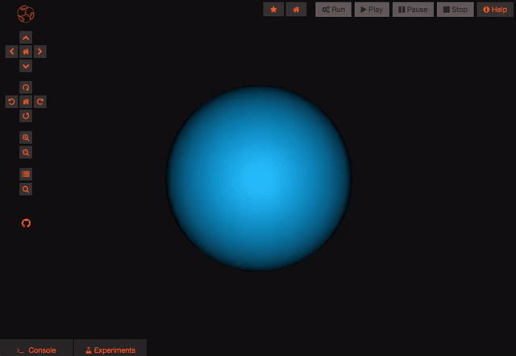
Once you are logged in and the project is persisted, you can begin working with your model. You can create new experiments for your model by clicking the “clone” button. This will create a new experiment that is just like the one you cloned from. You can modify parameters on any experiment you like.
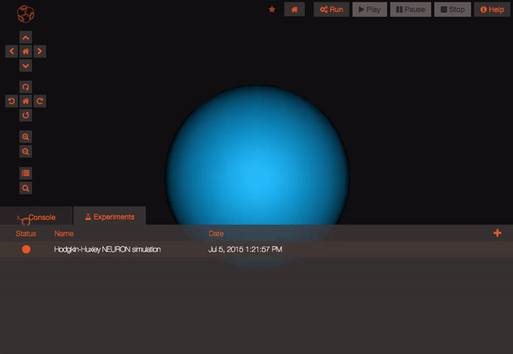
Recording variables#
Any state variable that exists in the model can be recorded prior to running a simulation, meaning it will be possible to subsequently plot its values once the simulation is complete. You can record a variable by searching for it in the search bar (open it using the little icon on the left hand side of the screen or pressing Ctrl+Space) and clicking on the Record icon . The icon signifying state variables that can be recorded is
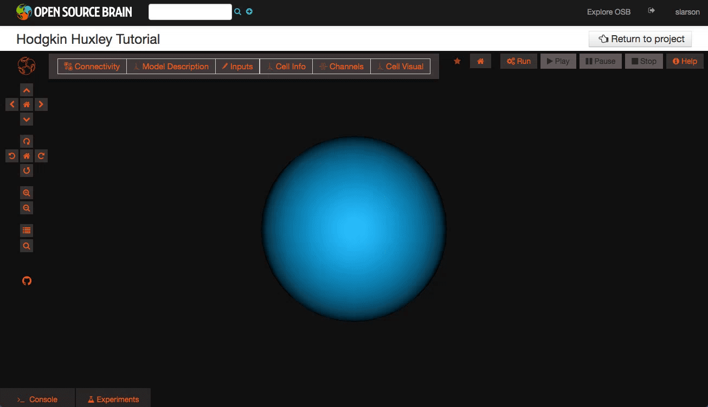
Setting parameters#
Any parameter in the model can be dynamically changed to see what the impact of different values will be. Prior to running an experiment you can modify the values by searching for the parameter name in the search bar and changing the value in the input box. The icon signifying a parameter name is
Run an experiment#
Once you are happy with what variables you will record and your experiment parameters, you can run the experiment. The Run button in the upper bar should be available to you. When you click it, the status of the experiment will change to show you both that it is queued for running and that it is completed. Playback results from a completed experiment
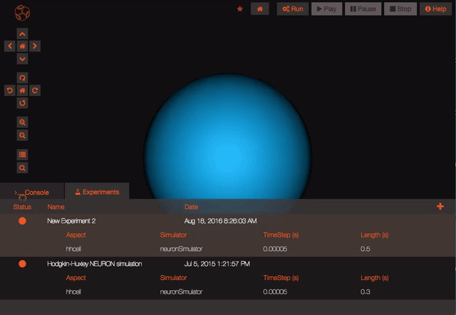
Once your experiment is finished, you can use the Play button to plot all the recorded variables that have been simulated.
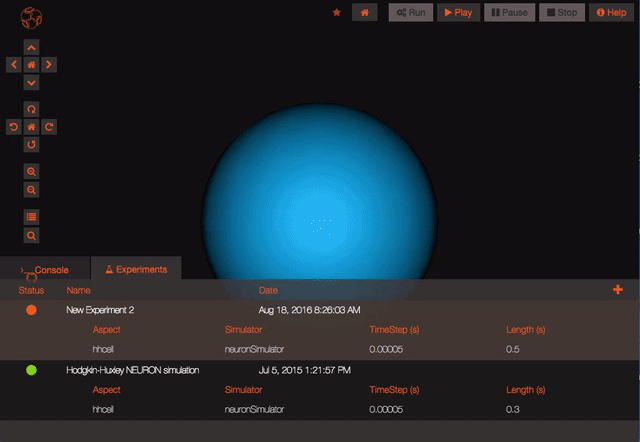
If you want to plot a specific variable that you recorded you will be able to do so using the search bar to look for that variable and using the “Plot” icon. The list of all the variables recorded in a given experiment is available clicking on the “Recorded variables” link in the Experiment table.
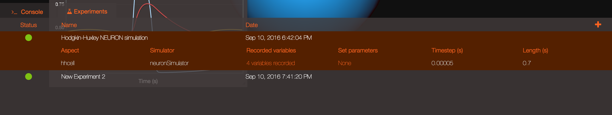
Clicking on the Results button at the top of the screen will let you rapidly access some default actions, including the ability to see the cells for which you recorded the membrane potential spiking!
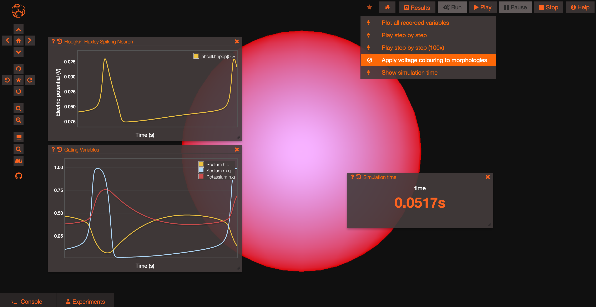
Congratulations, you should now be ready to start exploring the models in OSB and run your own simulations! Now it’s time to create your own project!